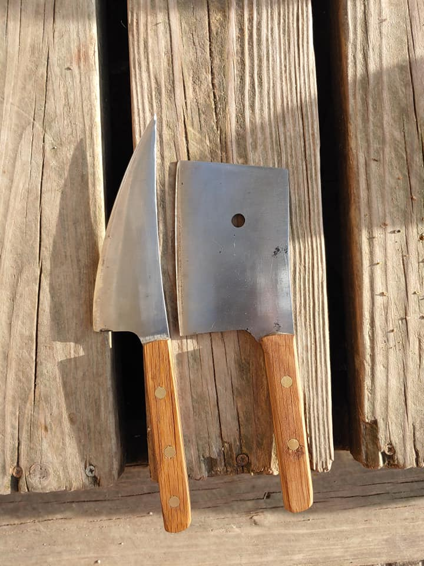
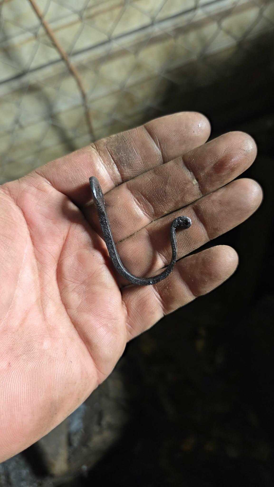
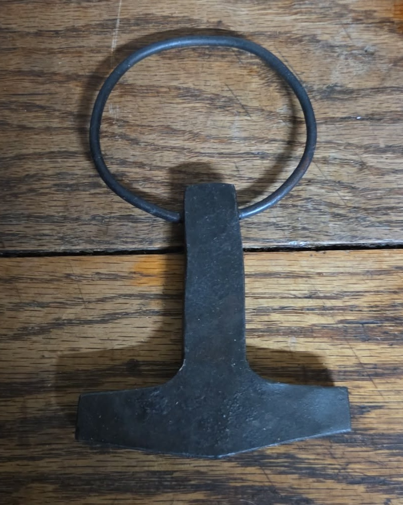
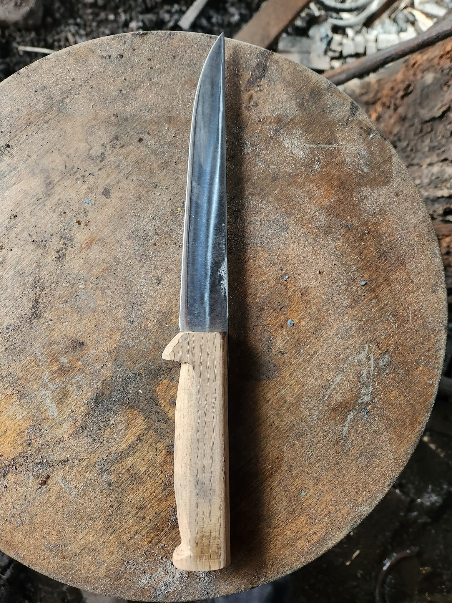
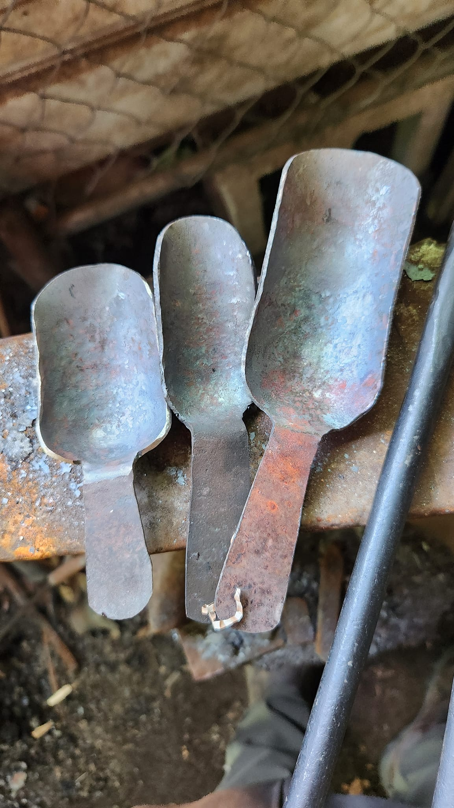

Crafting Information
Josh approaches each forge project with careful planning and steady perseverance. Crafting a single item begins with selecting the right piece of steel, cleaning it, and bringing the forge to the precise temperature. Every hammer strike must be measured, and each bend and curve deliberate, as even small mistakes can require starting over. The process is slow and repetitive, involving heating, shaping, cooling, and repeating, but Josh finds focus in the rhythm, letting the metal gradually take the form he envisions. Finishing touches, including filing, polishing, and sharpening, demand patience and exacting attention, transforming a raw piece of steel into a functional work that reflects both skill and dedication.
Once the basic shape of the item is established, Josh focuses on making it genuinely useful. He carefully smooths edges, strengthens joints, and refines details so the piece will perform well in everyday tasks. Knife making is particularly exacting, requiring precise angles and consistent thickness, but he embraces the challenge because he enjoys seeing his creations put to practical use. As each item nears completion, he considers not only its function but also how it might be presented, preparing it for display. The pieces he crafts are meant to be handled, appreciated, and used, and showcasing them allows others to see the care, skill, and purpose behind every item he makes.

Knife and Cleaver
This knife and cleaver is one of the first that Josh fully completed. Beyond just crafting the blade, it must be sharpened, polished, and a handle crafted.
Key Hook
This key hook was crafted as Josh was experimenting with different ways to shape iron into finer, more detailed shapes. It requires a combination of heating the metal and raw shaping, and fine grinding to get the small details.


Mjolnir Pendent
This Mjolnir Pendent was made as both an experiment of fine crafting and as a shout-out to a major interest of Josh's in Nordic history/Mythology (not to be confused to Marvel's Thor.)
Troll Cross Pendent
This is a Troll Cross Pendent. A later experiment in finer crafting, it is associated with Norse mythology and is meant to protect against trolls, elves, and malevolent magic.


Steak Knife
This steak or kitchen knife is one of the first knives Josh made to sell. Even though his primary goal for the forge is not to turn a profit, something has to pay for the coal and iron that goes into it!
Scoops
Making measuring spoons takes an amount of precision that takes time and patience. The spoon has to hold (when leveled) and exact volume, which means shaping it in the exact way, and if it's off a little bit, needing to reshape it. Metal in a forge doesn't go into a mold like plastic.
